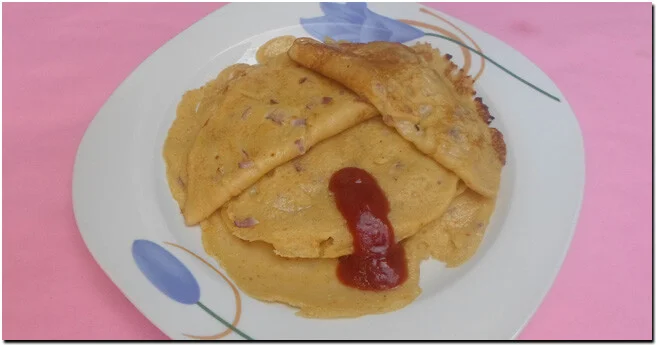

Home
Pancakes

A plate of Pancakes
Pancakes are one of the most simple and easy to make Nigerian foods, you’d want to start from here if you are new to Nigerian cooking.
Ingredients for Pancakes
- 2 cups of flour
- 1 cup of milk
- 2 eggs
- 1 tablespoon of sugar
- 1 teaspoon of baking powder
- 1/2 teaspoon of salt
- 2 tablespoons of butter